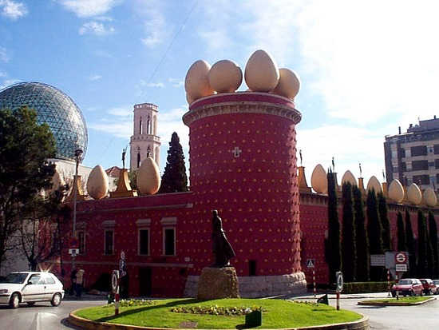

Miscellaneous

Aside from mathematics, I love reading literature, philosophy, biographies, art, and learning about different cultures. I practice Brazilian Jiu-Jitsu and enjoy exploring the city, which helps me stay focused and grounded. I love traveling whenever possible. I try to be in touch with nature...my favorite sceneries so far are in the Pacific Northwest (Oregon, Washington and part of British Columbia in Canada), Venezuela and Argentina.
Community Volunteering
I enjoy contributing to New York City through community volunteering, especially efforts that support neighbors directly and strengthen local resilience. Selected activities include:
- New York Cares: coat drives; veterans’ blanket/care package events; 9/11 Day of Service.
- City Harvest: mobile markets; food rescue.
- Environmental: compost events and sustainability initiatives.